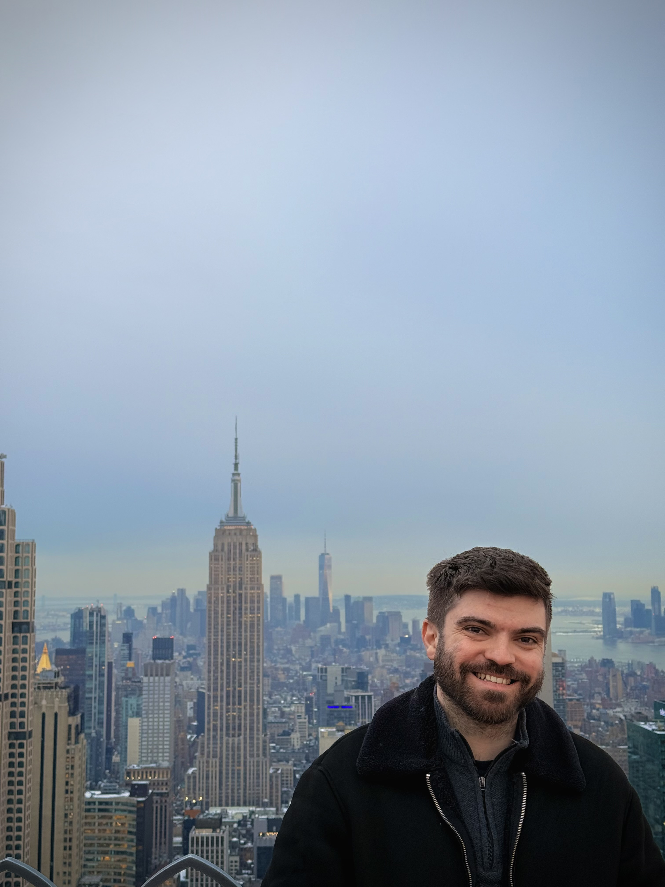

ICML 2026
Generalized Schrödinger Bridge on Graphs
Extending Schrödinger bridge formulations to graph-structured domains for principled transport and learning.

I am a Machine Learning PhD student in the Autonomous Control and Decision Systems (ACDS) Lab at Georgia Tech, advised by Prof. Evangelos Theodorou.
In summer 2026, I was a Machine Learning Research Associate at Morgan Stanley ML Research in New York, mentored by Wei Deng. My research develops principled and scalable learning methods at the intersection of control, optimal transport, and generative modeling.
Current focus
Recent work on stochastic control, optimal transport, and generative modeling.
ICML 2026
Extending Schrödinger bridge formulations to graph-structured domains for principled transport and learning.
NeurIPS 2025
Learning multi-marginal stochastic bridges with momentum for richer generative transport.
ICLR 2025 · Oral
A feedback-based formulation for efficient Schrödinger bridge matching and generative modeling.
ICLR 2024
A robust, control-inspired approach to learning optimizers through differential neural ODEs.
See my Google Scholar profile for the complete list.
Peer review service limited to machine learning conferences and journals.
Head Teaching Assistant · Georgia Institute of Technology
COE 2001: Statics · Spring 2025